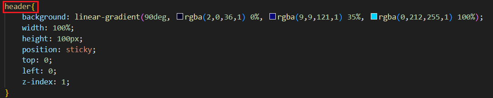
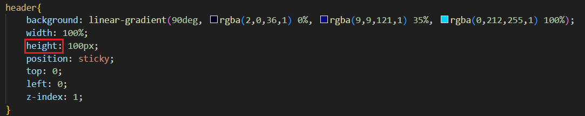
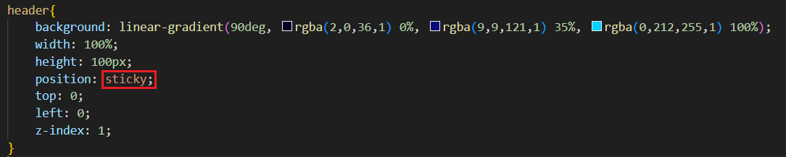
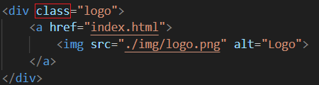
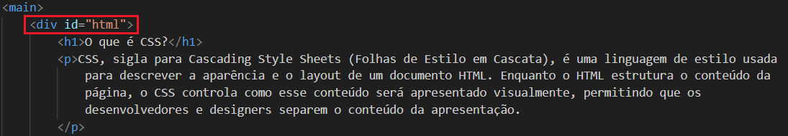
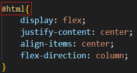

O que é CSS?
CSS, sigla para Cascading Style Sheets (Folhas de Estilo em Cascata), é uma linguagem de estilo usada para descrever a aparência e o layout de um documento HTML. Enquanto o HTML estrutura o conteúdo da página, o CSS controla como esse conteúdo será apresentado visualmente, permitindo que os desenvolvedores e designers separem o conteúdo da apresentação.
SELETORES
Indicam quais elementos HTML o CSS deve estilizar. Os seletores podem ser tags, classes, IDs, ou mais complexos, como seletores de atributo ou pseudoclasses. Exemplo: < p >, .classe, #id, a:hover
PROPRIEDADES
Definem o aspecto específico do estilo a ser aplicado, como cor, tamanho de fonte, margens, etc. Exemplo: color, font-size, margin, padding
VALOR
Especificam como as propriedades serão aplicadas. Cada propriedade pode ter um ou mais valores. Exemplo: red, 16px, auto, bold
CLASSES E IDS
Uma classe é um identificador que pode ser aplicado a múltiplos elementos HTML. É útil para aplicar o mesmo estilo a um grupo de elementos.
Sintaxe no CSS: Para atribuir uma classe a um elemento, utiliza-se o atributo class. Um elemento pode ter várias classes, separadas por espaços.

Um ID é um identificador único para um único elemento em uma página. Deve ser usado apenas uma vez por documento. É geralmente utilizado para estilizar um elemento específico de forma distinta ou para manipulações via JavaScript.
Sintaxe no CSS: Para atribuir um ID a um elemento, utiliza-se o atributo id.
CASCATA E ESPECIFIDADE
O termo "cascata" refere-se à forma como o CSS lida com regras conflitantes, combinando-as e resolvendo qual regra aplicar em casos de conflito. O CSS usa três critérios principais para determinar a ordem de aplicação dos estilos:
- Especificidade: É uma medida de quão específico é o seletor CSS que aplica o estilo. A especificidade é calculada com base em quatro componentes:
- Inline styles: Estilos aplicados diretamente no elemento HTML usando o atributo style têm a maior especificidade.
- IDs: Seletor de ID (ex.: #meuId) tem alta especificidade.
- Classes, pseudo-classes e atributos: Seletor de classe (ex.: .minhaClasse), pseudo-classes (ex.: :hover), e seletor de atributos (ex.: [type="text"]) têm uma especificidade intermediária.
- Elementos e pseudo-elementos: Seletor de elemento (ex.: div, p) e pseudo-elementos (ex.: ::before, ::after) têm a menor especificidade.